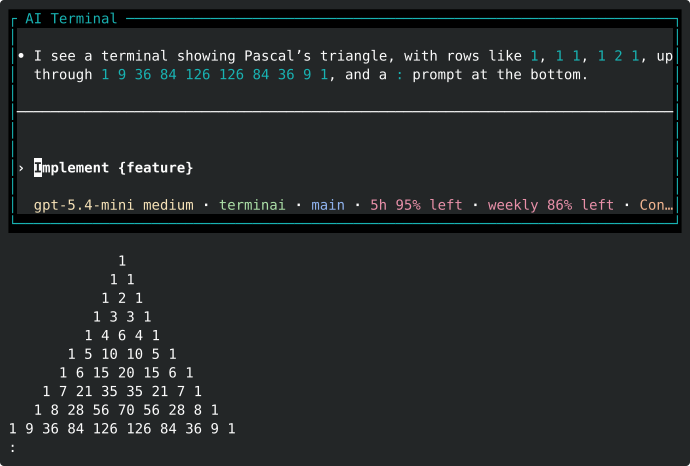
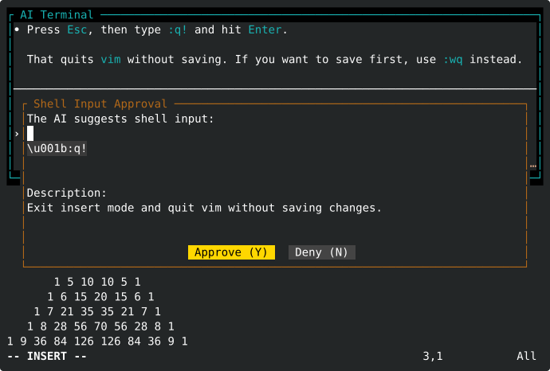

Read the current terminal

Always-available AI for any terminal
Use your terminal any way you want, then press Ctrl+Space to open Codex, Claude Code, or your own agent in a live terminal overlay with safe access to your terminal session.
How it feels
Terminai stays out of the way until you need help. The overlay is a real terminal running the agent you already use, with controlled access to the wrapped shell.


agent:
kind: custom
command: my-agent
args:
- --mcp-url
- "{mcp_url}"
- "{context_prompt}"
Agent support
Terminai does not own your model credentials or provider routing. Your configured CLI handles auth and model selection; Terminai provides the terminal wrapper, MCP server, and approval flow. Terminai never collects your data or makes outgoing network connections.
Bundled preset injects Terminai MCP tools and context into Codex.
Bundled preset starts Claude with Terminai MCP preconfigured.
Point Terminai at any CLI that can consume the MCP URL and context prompt. See config for where Terminai loads its config file from.
Get started
Install Terminai, sign in to your preferred AI CLI, then start a wrapped shell.
brew tap emosenkis/terminai https://github.com/emosenkis/terminai.git
brew trust --formula emosenkis/terminai/terminai
brew install emosenkis/terminai/terminaigit clone https://github.com/emosenkis/terminai.git
git submodule init
git submodule update
cd terminai
cargo install --path src$XDG_CONFIG_DIR/terminai/terminai.yaml